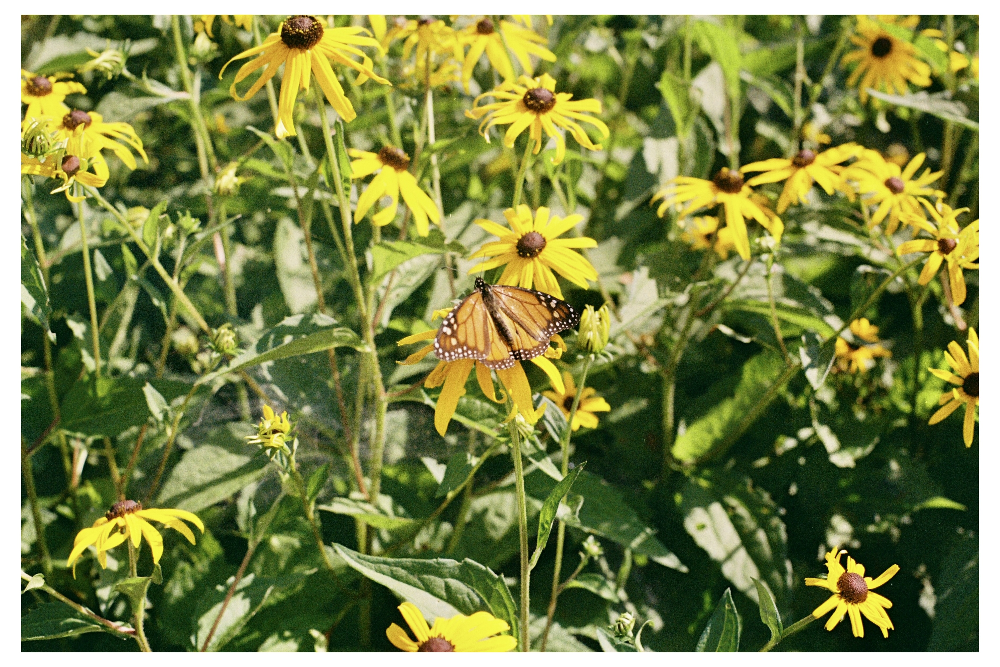
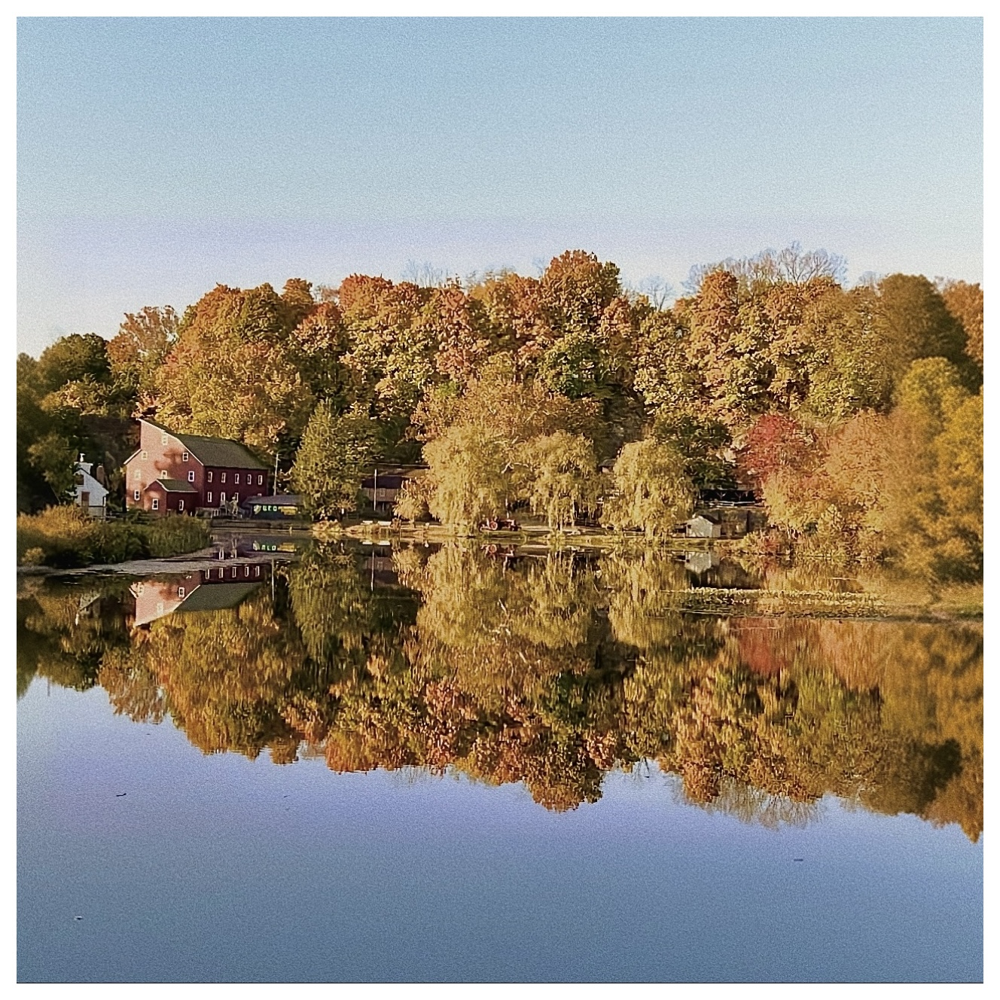
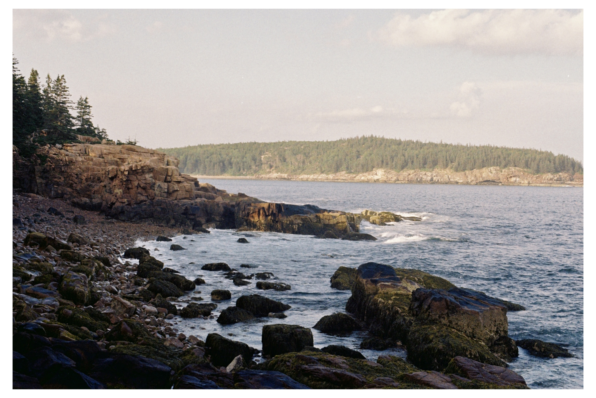
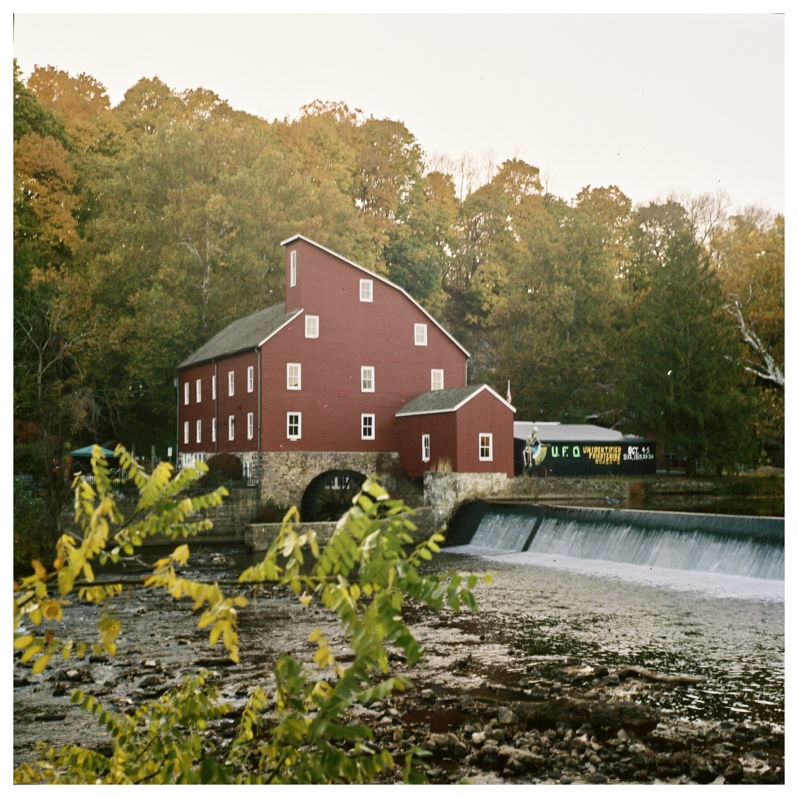
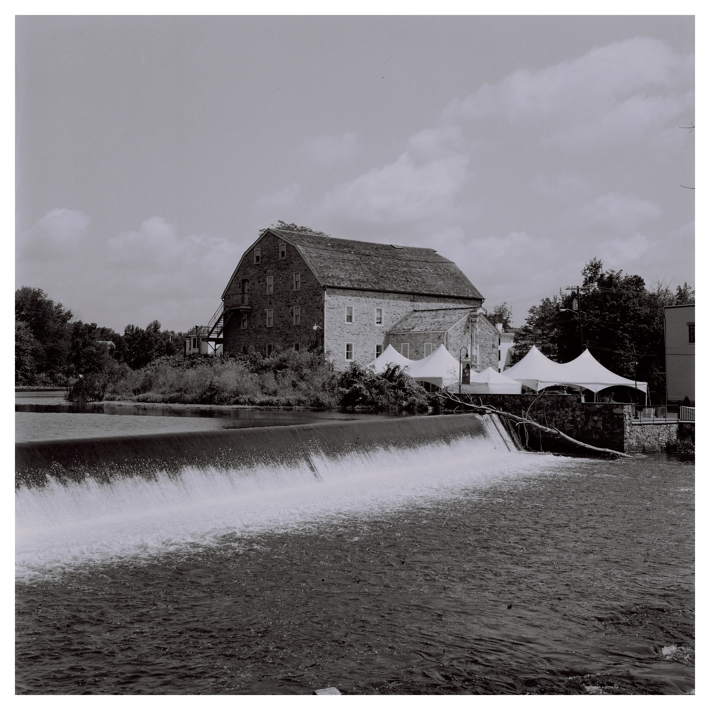

Portfolio

A picture of a butterfly taken at Costal Maine Botanical Gardens. Taken on a Nikon FM2, Kodak Gold 200 35mm.

Taken in Clinton, NJ - this photo shows the famous Red Mill set in the background surrounded by lush fall foliage. Taken on a Yashica Mat 124G, Kodak Portra 400 120mm.

A scenic landscape - taken at the Gorham Mountain Loop in Maine. Taken on a Nikon FM2, Fujifilm 35mm.

The famous Red Mill in Clinton, NJ. Taken on a Mamiya C330, Kodak Portra 200 120mm.

A portrait of a Pakistani bride - my sister - on her wedding day. Taken on a Mamiya C330, Kodak Porta 400 120mm.
